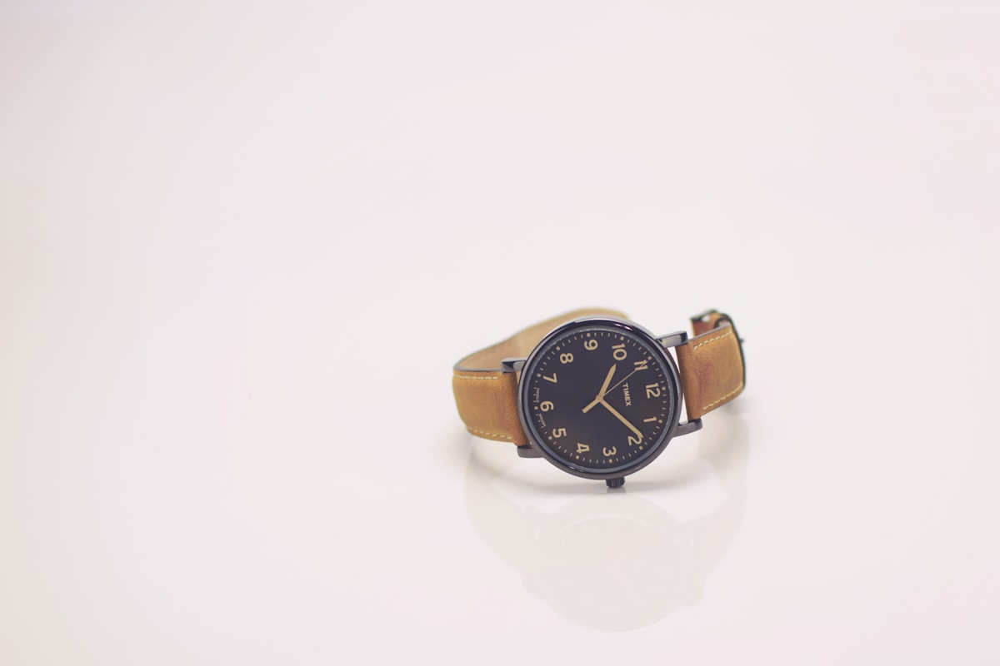

The Bedrock of Astronomical Horology
We are a dedicated watchmaking atelier committed to reviving constant-force gravity escapements, Invar thermal compensation, and hand-turned guilloché dial craft.
The Renaissance of Observatory-Grade Timekeeping
Pendulum Craft was founded by independent master watchmakers and micro-mechanical engineers united by a common conviction: modern horology had traded genuine mechanical ingenuity for computerized mass assembly.
We established our bench at 181 Mercer Street in SoHo to resurrect the supreme standards of the 18th and 19th-century astronomical observatories. By uniting the theoretical isochronism principles of Christiaan Huygens and George Graham with modern metallurgical alloys like Invar and Elinvar, we build timepieces that serve as living sculptures of gravitational physics.
Every gear wheel is cut tooth by tooth on classical cycloidal cutters, every pinion hand-polished to mirror perfection, and every escapement tuned to astronomical precision.

The Four Standards of Horological Rigor
The uncompromising principles governing every caliber and case produced in our atelier.
Invar Compensation
Employing certified nickel-iron Invar rods with near-zero thermal expansion to ensure absolute temperature stability.
Constant Force
Every movement incorporates a one-second spring remontoire or gravity arm to deliver unvarying torque to the balance.
Hand Guilloché
All dials are hand-turned on antique rose-engine and straight-line lathes, cutting pure geometric textures into solid silver.
Hand Anglage
Movement bridges are beveled by hand at 45 degrees, polished with diamond paste and gentian wood to mirror brilliance.